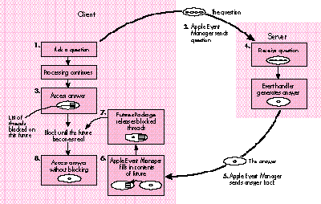

Futures provide a convenient way to implement asynchronous interapplication
communication without having to manage unwieldy completion routines. This article
presents an updated Futures Package that supports event timeouts, allows threaded
execution of incoming Apple events, and has been revised to work with the Thread
Manager in System 7.5.
Asynchronous Apple-event handling is difficult in Macintosh applications, and
programmers who make the extra effort to implement it often find that detecting and
recovering from event timeouts is an unmanageable task. Code that's written with the
assumption that a completion routine will eventually be called will end up waiting
forever if the event never completes. Futures provide a convenient way to support
asynchronous interapplication communication and handle timeouts in a robust way,
without sacrificing the simplicity or readability of the code.
Most applications attempt to manage multiple concurrent events through callbacks
passed to AESend -- but that leaves you, the application writer, with the burden of
ensuring that the callbacks really do handle every event that's processed by the
application's main event loop. For example, if you're writing an application that sends
events to the Scriptable Finder, and you want to make that application scriptable
itself, you'd have to be particularly careful not to lock up the user interface portion of
your application every time an Apple event was received and processed. But by using
threads, futures, and the asynchronous event-processing techniques described in this
article, you can make the user-interface and event-processing modules of your
application function independently -- and almost without effort on your part.
If you're a long-timedevelop reader, you probably remember Michael Gough's article
on futures that appeared indevelop Issue 7. That article's information is still valid,
and its code runs as well on today's Macintosh computers as it did when first
published; however, it requires the Threads Package that came with Issue 6 in order to
run. Thisarticle presents a revised version of the Futures Package, which works with
the ThreadManager that's now part of System 7.5. We'll also delve a little deeper into
the realm of asynchronous event processing and timeout event handling. And, for the
curious, we'll open the black box and peer inside to examine the inner workings of
futures.
For a review of threads and futures, see "Threads on the Macintosh" in develop
Issue 6, "Threaded Communications With Futures" in Issue 7, and "Concurrent
Programming With the Thread Manager" in Issue 17.*You can use the techniques
described in this article with any application that uses Apple events, but they're
particularly effective with scriptable applications that also send Apple events to other
applications. You'll find the code for the new Futures Package on this issue's CD, along
with the code for the FutureShock example, described later on, and preliminary
documentation for the Thread Manager (eventually to be incorporated intoInside
Macintosh: Processes ).
For more on interactions with the Scriptable Finder, see "Scripting the
Finder From Your Application," develop Issue 20.*
For those of you who missed "Threaded Communications With Futures" indevelop Issue
7, a future is a data object that looks and acts just like a real reply to some message,
when in reality it's nothing more than a placeholder for a reply that the server
application will deliver at some future time. (See "Client/Server Review" for a
summary of how clients and servers interact.) Code written to use futures looks the
same as code that waits for the reply to arrive (using a sendMode of kAEWaitReply)
and then works with the actual data. The only difference is that the futures code uses a
timeout value of 0. This causes AESend to return immediately to the caller with a
timeout error -- the normal and expected result -- and execution of the client
application is allowed to continue without delay.
The futures-savvy application then does as much processing as possible without
accessing the reply, including sending other Apple events. When the data from the
reply is absolutely needed, it's accessed as usual via AEGetKeyPtr or some other Apple
Event Manager data-accessor function. It's at this point that the Futures Package steps
in and suspends processing of the client application until the data for the reply
arrives; other parts of the client keep running unhindered. Of course, it's not possible
to stop one part of an application without stopping all of it, unless the application is
multithreaded. Therefore, futures need to run with some sort of Thread Manager.
Figure 1, which appeared originally indevelop Issue 7, summarizes the roles of
threads and futures and the interactions that take place when a client asks a question.
The primary benefit of the Thread Manager and Futures Package is that their use
removes the burden of managing multiple concurrent events, whether they're Apple
events or user actions. As mentioned earlier, most applications try to get around this
problem by providing a callback procedure to AESend that can handle other incoming
Apple events, update events, and user actions while the application is waiting for the
reply. This technique works, but it's up to you to make sure the callbacks handle
everything. Listing 1 shows an example of how the callback approach works; notice
that we need idle and filter procs to handle events that come in while the handler is
waiting for a reply.

Figure 1. The transformation of a future into a real answer
Responding to Apple events without using threads and futures is even more
problematic, particularly if the application needs to send out another message in order
to process the one that just came in (as in Listing 1). In that case, AESend is typically
called again with the same callback procedure, and the whole process stacks up one
level and repeats.
The problem with the stacked approach is threefold: First, the stack must unwind in
the same order in which it was set up -- an ill-timed incoming event, if it's a lengthy
request, could interfere with the processing of the current outgoing request for quite a
while. Second, every stack is finite in size; it's often difficult to prove that reentrant
code will always have enough stack space to complete. Finally, writing callbacks and
having multiple event loops in your application makes the source harder to follow, and
what's more, it's a real drag. By contrast, futures allow the freedom of asynchronous
operation without the drudgery of callbacks or completion routines -- your code looks
as simple as the normal synchronous version, but it runsasynchronously. The only
difference from Listing 1 is that the code calls AskForFutureinstead of AESend, as
follows:
if (err == noErr)
err = AskForFuture(&question, &answer, kAEDefaultTimeout,
kNoMaximumWait, kNormalPriority);
Listing 1. An Apple event handler that sends an event
pascal OSErr AnAEHandler(AppleEvent* ae, AppleEvent* reply,
long refCon)
{
OSErr err = noErr;
AppleEvent question, answer;
AEAddressDesc target;
DescType typeCode;
long actualSize, result;
// Create an Apple event addressed to a previously determined
// target. 'question' and 'answer' should be set to null
// descriptors.
err = AECreateAppleEvent(kAnEventClass, kAnEventID, &gTarget,
kAutoGenerateReturnID, kAnyTransactionID, &question);
// Call AESend with the send mode kAEWaitReply. Note the idle
// and filter procs.
if (err == noErr)
err = AESend(&question, &answer, kAEWaitReply,
kNormalPriority, kAEDefaultTimeout, gAEIdleProcRD,
gAEFilterProcRD);
if (err == noErr)
err = AEGetParamPtr(&answer, keyAEResult, typeLongInteger,
&typeCode, (Ptr) &result, sizeof(long), &actualSize);
if (err == noErr)
err = AEPutParamPtr(reply, keyAEResult, typeLongInteger,
(Ptr) &result);
AEDisposeDesc(&question);
AEDisposeDesc(&answer);
return noErr;
}
One of the primary differences between the behavior of the code that calls AESend and
the code that calls AskForFuture is that in the latter case, the event handler is already
executing in its own thread when it's called. This is just one of the conveniences
offered by the new Futures Package, and it's a major enhancement; we'll describe how
it works shortly.
This issue's CD contains a sample application called FutureShock that demonstrates the
use of futures. You'll notice that there are two copies of this application on the CD, one
sitting right next to the other. These copies are provided because FutureShock likes to
talk to itself -- well, not exactly to itself, but to other applications having the same
process signature but a different process serial number. To use FutureShock, launch
both copies of the application; you'll be presented with two instances of the same
window. Clicking the button marked Send in one application window will send an Apple
event to the other FutureShock application, which will acknowledge the receipt and
begin "processing" the event.
Actually, no processing is being done -- FutureShock is just whiling away the time
looking at its watch (TickCount, that is), calling AEResetTimer every now and again,
and calling YieldToAnyThread a lot. But don't tell the other FutureShock application
that. It's busy keeping track of how long the message has been out for processing and
how long it's been since its server last called AEResetTimer. If the server FutureShock
is too slow, the client FutureShock will give up and cancel the message. (If you'd like
to see this happen, use the set of radio buttons that allow you to inhibit the server
from calling AEResetTimer.)
The sample source code included with the applications gives you a good example of how
to use futures and keep track of message timeouts in a robust way. You'll also notice
that FutureShock installs custom thread context-switching callbacks -- a critical step
for any application that uses threads (see "Custom Context Switching").
The magic that makes Apple-event futures possible lies in the special blocking and
unblocking callbacks supported by the Apple Event Manager. These callbacks aren't
documented inInside Macintosh, but they can be enabled with the function
AEInstallSpecialHandler with the special keywords keyAEBlock ('blck') and
keyAEUnblock ('unbk').
AEInstallSpecialHander is described in Inside Macintosh: Interapplication
Communication, page 4-100.*
If a blocking handler is installed, the Apple Event Manager calls it whenever an
attempt is made to access data from an Apple-event reply that hasn't yet beenreceived.
Any Apple Event Manager function that extracts data, such as AEGetKeyPtr,causes the
blocking routine to be called. The Apple Event Manager calls the unblocking routine as
soon as the reply arrives. The blocking routine may be called many times for one reply
(once for each call to AEGetKeyPtr or to another data accessor), but the unblocking
routine will be called only once -- whether it's needed or not.
The Futures Package makes use of the blocking and unblocking callbacks in a
straightforward way. Whenever the blocking routine is called for a given Apple event
reply, the reply's return ID is looked up via its keyReturnIDAttr attribute. The return
ID is assigned by the Apple Event Manager whenever an event is sent. The Futures
Package creates a semaphore and gives it an ID number that matches the return ID of
the reply event so that the semaphore can be found again later. (For a review of
semaphores, see "What's a Semaphore?")
The return ID is a long integer that's assigned sequentially when an event is
created, and then copied into the reply event so that the Apple Event Manager can match
the reply with the event that generated it.*
Once the semaphore has been created, the blocking routine gets a reference to the
current thread, adds it to the semaphore, and puts the thread to sleep. The thread is
now said to beblocked on the semaphore. If all goes well, the reply arrives shortly,
and the Apple Event Manager calls the unblocking routine. Once again, the return ID is
extracted from the reply event passed to the unblocking routine and is used to look up
the semaphore created by the blocking routine. The unblocking routine then frees the
semaphore, waking up all the threads that are blocked on it. Listing 2 shows the
implementation of the blocking and unblocking routines in the Futures Package.
To use futures in your application, simply follow these guidelines:
Listing 2. Blocking and unblocking routines
pascal OSErr AEBlock(AppleEvent* reply)
{
TSemaphore* semaphore = nil;
OSErr err = noErr;
// It should always be possible to create and grab the semaphore.
semaphore =
GetFutureSemaphore(reply, kCreateSemaphoreIfNotFound);
if (semaphore != nil)
err = semaphore->Grab();
else
err = errAEReplyNotArrived;
return err;
}
pascal OSErr AEUnblock(AppleEvent* reply)
{
TSemaphore* semaphore = nil;
OSErr err = noErr;
semaphore =
GetFutureSemaphore(reply, kDontCreateSemaphoreIfNotFound);
if (semaphore != nil) {
semaphore->ReleaseAllThreads();
semaphore->Dispose();
}
return err;
}
As you can see, there's almost nothing special you need to do in order to use futures --
your code will look almost exactly the same as similar code that doesn't use futures at
all.
Futures provide a convenient way to send messages and receive replies
asynchronously, but it's just as important for the server application to process
events asynchronously. There are a number of techniques for creating threads to
process incoming events, but the most convenient thing to do would be to spawn a
thread before calling AEProcessAppleEvent and allow the Apple Event Manager to
dispatch the event from within the cozy, asynchronous environment of its own thread.
Unfortunately, AEProcessAppleEvent is not reentrant; if you call it from a thread,
your application will crash if another event is received before the current one
finishes processing -- which rather defeats the whole purpose of asynchronous
processing, to put it mildly. Fortunately, there's a convenient workaround for this
problem.
The solution is to install a predispatch handler that intercepts all events being
dispatched by AEProcessAppleEvent and makes sure that the event is suspended and that
the handler exits right away. The predispatch handler also forks a new thread that
manually dispatches the event when the thread is next scheduled. When the event
handler returns, this thread calls AEResumeTheCurrentEvent to force the Apple Event
Manager to send the reply back to the client. Listing 3 shows how this is done.
Listing 3. Spawning a new thread before dispatching the event
#define kUseDefaultStackSize 0
pascal OSErr Predispatch(AppleEvent* ae, AppleEvent* reply,
long refCon)
{
OSErr err = errAEEventNotHandled;
PredispatchParms** dispatchParams = nil;
AEEventHandlerUPP handler = nil;
long handlerRefCon = 0;
if (GetAppleEventHandlerUPP(ae, &handler, &handlerRefCon) ==
noErr) {
dispatchParams = (PredispatchParms**)NewHandle(
sizeof(PredispatchParms));
if (dispatchParams != nil) {
ThreadID newThreadID;
(*dispatchParams)->fAppleEvent = *ae;
(*dispatchParams)->fReply = *reply;
(*dispatchParams)->fEventHandler = handler;
(*dispatchParams)->fHandlerRefCon = handlerRefCon;
if (NewThread(kCooperativeThread,
(ThreadEntryProcPtr)RedispatchEvent,
(void*)dispatchParams, kUseDefaultStackSize,
kCreateIfNeeded | kFPUNotNeeded, nil,
&newThreadID)
== noErr) {
dispatchParams = nil;
// Suspend the current event so that the Apple Event
// Manager won't break. Set the error to noErr to
// tell the Apple Event Manager we handled the event.
AESuspendTheCurrentEvent(ae);
err = noErr;
}
}
}
// Dispose of the dispatch parameters if created but not used.
if (dispatchParams != nil)
DisposeHandle((Handle)dispatchParams);
return err;
}
void RedispatchEvent(void* threadParam)
{
OSErr err = noErr;
PredispatchParms** dispatchParams =
(PredispatchParms**)threadParam;
AppleEvent ae = (*dispatchParams)->fAppleEvent;
AppleEvent reply = (*dispatchParams)->fReply;
AEEventHandlerUPP handler = (*dispatchParams)->fEventHandler;
long handlerRefCon = (*dispatchParams)->fHandlerRefCon;
DisposeHandle((Handle)dispatchParams);
// Call the event handler directly.
err = CallAEEventHandlerProc(handler, &ae, &reply,
handlerRefCon);
if (err != noErr) {
DescType actualType = typeNull;
long actualSize = 0;
long errorResult;
// If the event handler returned an error, but the reply does
// not contain the parameter keyErrorNumber, put the error
// result into the reply.
if (AEGetParamPtr(&reply, keyErrorNumber, typeLongInteger,
&actualType, &errorResult, sizeof(long), &actualSize)
!= noErr) {
errorResult = err;
AEPutParamPtr(&reply, keyErrorNumber, typeLongInteger,
&errorResult, sizeof(long));
}
}
// Tell the Apple Event Manager to send the reply.
AEResumeTheCurrentEvent(&ae, &reply,
(AEEventHandlerUPP)kAENoDispatch, 0);
}
The beauty of the technique shown in Listing 3 is that it's nicely isolated from the rest
of the code. The application's main event loop still calls AEProcessAppleEvent as
usual, and event handlers are installed and dispatched as usual. The only difference is
that now, event handlers are processed in their own thread of execution and may call
YieldToAnyThread to allow other parts of the application to run. The Futures Package
installs this predispatch handler when it's initialized; Listing 4 shows an example of
an event handler similar to the one in the FutureShock application.
Listing 4. Simple threaded event handler
pascal OSErr TestEvent(AppleEvent* ae, AppleEvent* reply,
long refCon)
{
OSErr err = noErr;
while (WorkLeftToDo() && (err == noErr)) {
YieldToAnyThread();
if (gHasIdleUpdate)
IdleUpdate();
err = DoSomeWork();
}
return err;
}
Note the call to IdleUpdate; on PowerBooks, if the operating system thinks that the
system isn't doing anything important, it will slow down the processor to conserve
power. This happens after 15 seconds during which no user activity and no I/O occurs.
In the realm of threads and interapplicationcommunication, it's easy for 15 seconds to
go by with no such activity, even if the machine is actually busy processing an event.
Calling the Power Manager procedure IdleUpdate avoids the power-saving mode, and
any application that performs lengthy operations should do this. Be sure, though, to
check the gestaltPMgrCPUIdle bit of the Gestalt selector gestaltPowerMgrAttr before
calling IdleUpdate, because most desktop machines don't implement this trap.
IdleUpdate is described in Inside Macintosh: Devices, page 6-29.*
Another mechanism for spawning a thread besides using the predispatch handler is to
use Steve Sisak's AEThreads library; see "The AEThreads Library" for more
information.
The Apple Event Manager provides a function called AEResetTimer that lets servers
inform their clients that work is being done on the event but that the reply is not yet
available. AEResetTimer is of value only to clients that use the send mode
kAEWaitReply -- the intention was for clients to use a fairly short timeout value and
for servers to periodically inform the clients of progress so that the call to AESend
isn't aborted unless the server actually can't be reached (or crashes). The mechanism
involves the Apple Event Manager sending a "wait longer" event back to the client,
tagged with the return ID of the Apple-event reply. The "wait longer" event is
intercepted by a filter inside AESend that's supposed to reset the event's timer;
unfortunately, a bug in the Apple Event Manager prevents the "wait longer" event from
working correctly, and the timer is not reset.
The existence of this bug shouldn't deter you from calling AEResetTimer in your
server application, though. The bug exists in the code that runs on the client side of the
communication, and some future version of the Apple Event Manager will fix it. Also,
as you'll see shortly, the Futures Package hooks into the "wait longer" event and uses
it to prevent blocked messages from timing out if the server application
usesAEResetTimer to request more time, effectively bypassing the bug. Other
applicationsthat don't use the Futures Package could use a similar technique to detect
server activity -- thus, AEResetTimer is the correct protocol for the server, whether
the client application uses AESend with kAEWaitReply or the Futures Package.
TIME AFTER TIME
How often should the server call AEResetTimer? Calling it too frequently is a bad idea,
because an event is generated on every call to reset the timer. Some existing
applications call AEResetTimer when half the message's timeout value has expired; the
timeout value can be determined by examining the attribute keyTimeoutAttr in the
Apple event that the server receives. The problem with this technique is that futures,
as you may remember, are always sent with a timeout value of 0. Naive servers that
always depend on keyTimeoutAttr to be a meaningful value will call AEResetTimermuch
too frequently.
At the very least, servers should define a threshold, perhaps 150 ticks, and never call
AEResetTimer more frequently than that. The recommended solution, however, is first
to check for the presence of the attribute keyAEResetTimerFrequency. If it exists, it
indicates approximately how often, in ticks, the client would like the server to call
AEResetTimer. If this attribute doesn't exist, the server should fall back on the default
method of using the larger of half the value of keyTimeoutAttr or 150 ticks. This
technique provides the greatest flexibility for clients, while allowing the server
application to continue to perform reasonably well even with clients that don't provide
specific timeout information in the events they send.
It's the responsibility of the client to pick timeout and reset frequency values that
allow the server enough time to respond but still provide adequate response time to the
user when the server actually isn't available. The client should take into account that
the transit time for the event will vary, depending on whether the event is being sent
to a local or a remote process and on the network conditions at the time the event is
sent. Finally, when choosing timeout values, remember that almost no background
processing is done on the Macintosh as long as the user is doing something with the
mouse button down (such as browsing menus or dragging windows or Finder items). A
client that picks too small a value for its timeout is in danger of having user actions
interfere with the server's processing of its events, which could quite easily cause the
client's events to time out unnecessarily.
HOW FUTURES DEAL WITH TIMEOUTS
The Futures Package keeps track of timeouts whenever a thread is blocked while
accessing data from a reply that hasn't arrived yet. The client must specify the timeout
value to use with the SetReplyTimeoutValue function, which must be called after the
message is sent but before the reply is accessed. The AskForFuture function follows
this protocol when it calls SetReplyTimeoutValue, so your application doesn't need to
call SetReplyTimeoutValue if it calls AskForFuture. When this timeout value is set, the
Futures Package creates a semaphore and stores the timeout values inside it. This same
semaphore is used to block any thread that attempts to access data from the reply
before it arrives. If an event times out, the semaphore wakes up all threads that are
blocked on it and returns a timeout error to the future's blocking routine. The error is
passed to the Apple Event Manager, which will return errAEReplyNotArrived to the
accessor(s) that caused the thread to be blocked.
Both SetReplyTimeoutValue and AskForFuture take two parameters: a timeout value
and a maximum wait value, both expressed in ticks. The timeout value indicates how
many ticks the client is willing to wait before it hears anything from the server; if the
server calls AEResetTimer, the client resets its timer and begins waiting again. But if
the timeout value is the only control that a client has, a berserk-server-from-hell
that does nothing but call AEResetTimer for days on end and never returns any results
could keep the hapless client locked up forever. This is where the maximum wait value
comes in: if the client specifies a maximum wait time, any event that remains
unserviced for longer than this period of time immediately terminates, even if the
server called AEResetTimer only a couple of ticks ago.
Usually, it's best for clients to assume that servers are well behaved, and that they
will eventually return results as long as they're still working on the problem.
Distributed computing applications, though, might find it better to reschedule some
lagging events on a faster machine if the server initially selected doesn't respond
quickly enough. The maximum wait value gives them the control they need to do so. If
either the timeout value or the maximum wait time expires, the Futures Package
automatically wakes up all threads blocked on that future. The error code returned by
the Apple Event Manager is errAEReplyNotArrived, which is the same result that
would be returned if a reply that had timed out from AESend was accessed without
using the Futures Package.
Note that the Apple Event Manager doesn't assume that an application has given up on a
reply until the reply is disposed of. Until that happens, the reply will be filled in as
soon as it's received, even if the event has timed out. A distributed computing
application that rescheduled an event on a faster machine could keep a reference to the
old future around and use the result from the machine that finished first.
Here's a description of the routines provided by the updated Futures Package.
void InitFutures(ThreadCreateUPP threadCreateProc,
long initFuturesFlags)
The function InitFutures initializes and enables the Futures Package. The parameter
initFuturesFlags should be set to the sum of the flags that the futures-savvy
application wants to set. The Futures Package recognizes two flags: the first,
kInstallHouseKeepingThread, causes the Futures Package to create a new thread that
does nothing but call IdleFutures (described below); the other parameter,
kInstallPredispatch, specifies that the Futures Package should install the predispatch
handler shown earlier in Listing 4. This handler causes a new thread to be created for
every Apple event dispatched by AEProcessAppleEvent. The threadCreateProc
parameter to InitFutures is for applications that install custom context-switching
routines or that maintain a custom thread scheduler. This thread creation procedure is
called every time the Futures Package creates a new thread, allowing your application
to hook the new thread into its scheduler and install custom context-switching
routines.
The thread creation procedure is defined like this:
pascal OSErr MyThreadCreateHandler(ThreadEntryProcPtr threadEntry,
void* threadParam, long handlerRefCon, ThreadID* threadMade)
The threadEntry, threadParam, and threadMade parameters should be passed on to
NewThread. The handlerRefCon parameter is the refCon that was passed to
AEInstallEventHandler when the event handler for the Apple event being dispatched was
installed. InitFutures will also call the thread creation procedure to create the
housekeeping thread; in that case, the refCon passed in will be 0. If a thread creation
procedure isn't provided, the Futures Package will call NewThread directly.
void BlockUntilReal(AppleEvent* reply)
The function BlockUntilReal causes the current thread of execution to be blocked until
the specified Apple event reply becomes a real message. Usually, this routine doesn't
need to be called; the Futures Package automatically blocks the current thread
whenever any Apple Event Manager accessor function is called to get data out of a
future.
Boolean ReplyArrived(AppleEvent* reply)
The function ReplyArrived returns true if the given reply has been received, in which
case it may be accessed without blocking. Usually, this routine won't need to be called.
The whole idea of the Futures Package is to remove the burden of keeping track of
whether a reply has arrived. ReplyArrived has a counterpart function named
IsFuture, which is provided for compatibility with the Futures Package API presented
in Issue 7 ofdevelop.
void SetReplyTimeoutValue(AppleEvent* reply, long timeout,
long maxWaitTime)
SetReplyTimeoutValue allows the client to specify a timeout value and an upper bound
on the amount of time it's willing to wait before a thread that's blocked on a future
should be awakened and informed that the event timed out. If used,
SetReplyTimeoutValue must be called after the event is sent, but before the reply is
accessed in any way. Usually, SetReplyTimeoutValue won't need to be called directly,
because it's called by the function AskForFuture (described below).
void IdleFutures()
The IdleFutures function does the actual test to see whether any of the blocked messages
have timed out. Usually, IdleFutures is called automatically by the Futures Package; if
your application doesn't specify the flag kInstallHouseKeepingThread in InitFutures,
however, it should call IdleFutures periodically. It's not necessary to call IdleFutures
more frequently than every tick or so, but the function is smart enough not to do work
superfluously, so there shouldn't be a negative performance hit to calling IdleFutures
more frequently than once a tick. Don't go overboard, though -- enough is enough.
OSErr AskForFuture(const AppleEvent* ae, AppleEvent* future,
long timeout, long maxWaitTime, AESendMode sendMode,
AEPriority priority)
The AskForFuture function calls AESend following the protocol defined by the Futures
Package; keyAEResetTimerFrequency is set before the event is set, and
SetReplyTimeoutValue is called with the specified timeout and maximum wait times.
AskForFuture will always return immediately; the reply received will be a future,
and timeout processing will be done correctly if the current thread of execution blocks
on the future.
long GetResetTimerFrequency(const AppleEvent* ae)
The GetResetTimerFrequency function returns the frequency, in ticks, with which the
Futures Package thinks that your application should call the Apple Event Manager
function AEResetTimer, based on parameters in the provided Apple event. Note that
GetResetTimerFrequency should be passed the Apple-event message; this is different
from the Apple Event Manager routine AEResetTimer, which needs the Apple-event
reply.
OSErr ResetTimerIfNecessary(AppleEvent* reply,
unsigned long& lastReset, long resetFrequency)
ResetTimerIfNecessary calls AEResetTimer when enough time has elapsed since the
last time it was called. The server is responsible for keeping track of the reset
frequency and storing away the last reset tick, although the Futures Package will do
the housekeeping of updating the last reset tick whenever AEResetTimer is actually
called.
Apple events allow ordinary applications to become powerful tools for use both in
scripting and by other applications; however, the power afforded by Apple events can
be quickly negated if the server can't process multiple events asynchronously, or if
the user can't work with the client process while it's waiting for a reply. As more
applications become scriptable, and as component-oriented systems such as OpenDoc
become more prevalent, the distinction between client and server becomes blurred,
and more applications will take on both roles. In a world where asynchronous
interapplication communication is the norm rather than the exception, the Futures
Package allows you to harness the power of asynchronicity without becoming lost in a
mire of completion routines.
In the vocabulary of interapplication communication, the client is the application
that sends a message, and the server is the application that receives, processes, and
responds to it. Since any application that processes events is a server, all scriptable
applications are servers.
Some applications may take on the role of both client and server at different times. For
instance, if an application needs to send an event to some other application in order to
process the event that it just received, that application is the client of one application
and the server of the other. It's also possible for an application to be a client of itself,
if it sends itself messages; factored, recordable applications fall into this category.
Applications that act as both clients and servers should process events asynchronously
-- otherwise, the system can quickly become lost in a sea of woe and deadlock. But
asynchronous event handling is complex and difficult; that's the problem that futures
solve.
An application that uses threads must install custom thread context-switching
callbacks if it has any global variables that need to have separate instances in every
thread of execution. The most common reason for needing separate instances of a global
variable is to maintain any global stacks in the application, such as the failure
handler stack maintained by most exception handler packages.
A custom thread context-switching callback must be installed for every thread created
by an application and also for the main thread (the thread created automatically by the
Thread Manager). You can reference the main thread by using the constant
kApplicationThreadID for its thread ID.
In the Metrowerks environment, an internally used global variable called
_local_destructor_chain points to the top of a stack that keeps track of all the local
variables that may need to have their destructor called (~TObject). If this variable
isn't swapped out on a per-thread basis, one thread could cause the destructor
forobjects still active in another thread to be called out of context. The results, of
course, would be disastrous (a crash). Compiler-specific global variables should be
saved and restored within #if blocks, as is done in the following code (taken from
FutureShock's swap-context-out callback):
#if _MWERKS_
fLocalDestructorChain = _local_destructor_chain;
#endif
The same technique should also be used in the swap-context-in callback.
A semaphore is an object that's used to arbitrate access to a limited resource or to
somehow synchronize execution of independently operating processes. A semaphore
controls the flow of execution in an application.
Threads of execution that "own" a semaphore are allowed to run, and threads that
attempt to take ownership of a semaphore that isn't available are stopped and not
allowed to run again until the semaphore becomes available. When used to arbitrate
access to a limited resource, the semaphore also enforces strict sequencing of the
threads that are blocked on it -- ownership of the semaphore is provided to the
threads that request it one at a time, in the order the requests are made. Typically,
only one thread of execution is allowed to own a semaphore at a time.
With the Futures Package, when a thread attempts to access data from a future, a
semaphore is used to synchronize its execution with the arrival of the reply. In this
case, none of the threads owns the semaphore; conceptually, ownership lies with the
future that the semaphore is associated with. When the future becomes a real reply,
all of the threads blocked on the semaphore are allowed to run, and the semaphore is
deleted.
BY STEVE SISAK
In my article entitled "Adding Threads to Sprocket" in the December 1994 issue of
MacTech Magazine , I described an implementation of futures and a library called
AEThreads that allows you to install asynchronous Apple event handlers. I stated that
the futures code should really be supported by Apple and that you should go with their
solution if they eventually provide one. This is the case here. The Futures Package
addresses many of the issues that my library did not, and is also provided in source
form. Therefore I recommend that you use Greg's futures implementation instead of
mine in any new code.
You may, however, find AEThreads more useful for spawning threads than the
predispatch handler in the Futures Package. Its main advantage is that it allows you to
control, on an individual basis, which events are handled asynchronously and which
are handled immediately. It also enables you to control all of the thread parameters
(for example, stack size and needFPU) for your event-handling threads, and it doesn't
interfere with installing a predispatch handler in your application (as described in
Inside Macintosh: Interapplication Communication on pages 10-19 to 10- 21).
The AEThreads library is provided on this issue's CD. To use it, don't install the
predispatch handler when you initialize the Futures Package (as explained in the
description of InitFutures later in this article), and call
AEInstallThreadedEventHandler where you would have called AEInstallEventHandler.
Everything else should work the same. If you have any questions, comments, or
problems with AEThreads, please let me know at sgs@gnu.ai.mit.edu.
RELATED READING
GREG ANDERSON worked with Michael Gough on the original Futures Package that
was described in Issue 7 of develop . One of Greg's favorite activities is ballroom
dancing, which he does at every opportunity -- particularly if he gets the chance to
polka like a mad dog. Professionally, Greg is the technical lead of the Finder team at
Apple. *
Thanks to our technical reviewers Eric Anderson, Michael Gough, Ed Lai, and Steve
Sisak. Special thanks to Ed Lai, who put futures support into the Apple Event Manager.
*